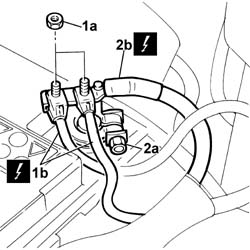
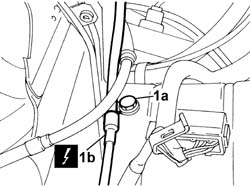
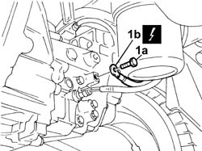
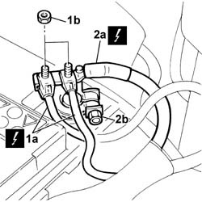

5530B22 battery earth lead - r+r
- Path
- Procedures > 55 ELECTRICAL EQUIPMENT > 5530 CURRENT GENERATOR > 5530B battery and leads > 5530B22 battery earth lead - r+r
- Kind
- repair procedure (removal / refitting; the operation number is the code)
- Applies to
- all engines; all production periods
- Interactive page
- https://sloeber94.github.io/elrnDB-fDbl/en/#/2584926
Applies to: all engines; all production periods
 Removing
Removing
 Refitting
RefittingPlace the car on a ramp.
1. Undo the fixing nuts (1a) and disconnect the electrical cables (1b).
 | Name | Connector |
|---|---|---|
1b | Battery |
2. Loosen the nut (2a) and disconnect the negative battery terminal (2b).
| Name | Connector |
|---|---|---|
2b | Battery |

Applies to: all engines; all production periods
1. Undo the fixing bolt (1a) and disconnect the earth lead (1b) from the bodyshell.
| Name | Connector |
|---|---|---|
1b | Battery earth |

Applies to: all engines; all production periods
1. Undo the fixing bolt (1a) and disconnect the earth lead (1b) from the bell housing.
| Name | Connector |
|---|---|---|
1b | Earth on engine |

Applies to: all engines; all production periods
Remove the battery earth lead.
Applies to: all engines; all production periods
Refitting
RemovingCheck the condition of the earth lead.
If necessary, conduct a continuity test on the lead.
Position the battery earth lead and tighten the bolt fixing the lead to the bell housing to torque.
 | Fastening | Component | Ø | Value (daNm) |
|---|---|---|---|---|
- | Bolt | BATTERY EARTH LEAD | M8 | (bell housing) 2.4 |
Tighten the bolt fixing the battery earth lead to the bodyshell to torque.
| Fastening | Component | Ø | Value (daNm) |
|---|---|---|---|---|
- | Bolt | BATTERY EARTH LEAD | M10 | (bodyshell) 5.6 |
1. Connect the electrical cables (1a) and tighten the fixing nuts (1b).
| Name | Connector |
|---|---|---|
1a | Battery |
2. Connect the negative battery terminal (2a) and tighten the nut (2b).
| Name | Connector |
|---|---|---|
2a | Battery |

Applies to: all engines; all production periods
Remove the vehicle from the ramp.